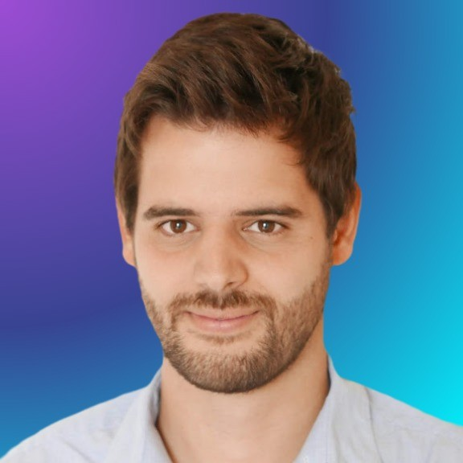
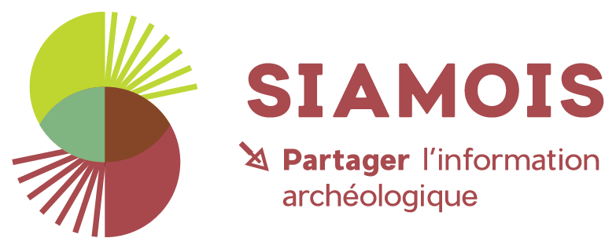
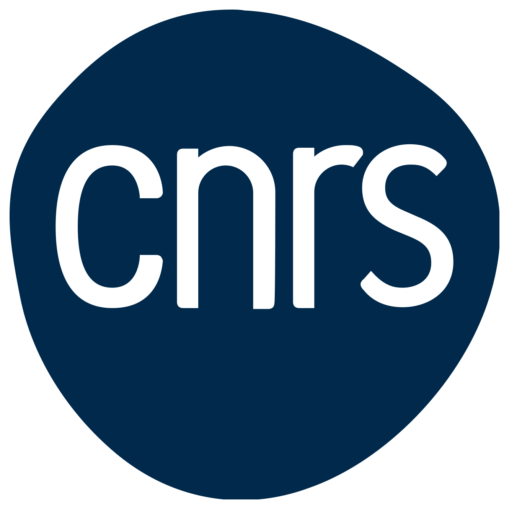
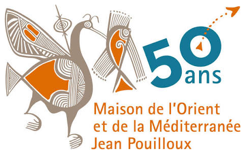
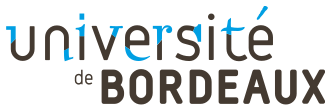
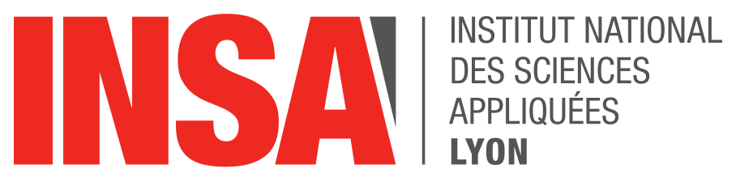
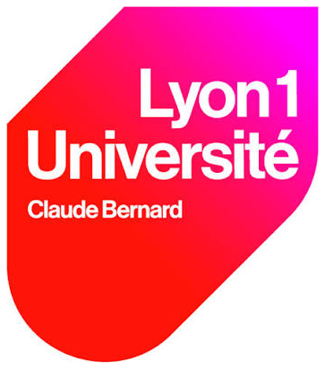

Aujourd'hui au CNRS, à la Maison de l'Orient et de la Méditerranée, je développe et je pilote Siamois, une application web d'enregistrement de terrain archéologique. Sa base de données est configurable et flexible, et connectée au web sémantique. Je m'occupe des spécifications, de la priorisation en Agile et des ateliers de cadrage avec les équipes métiers, et je code en Java et Spring Boot, avec JSF et React.
Je suis aussi l'un des développeurs principaux de SPINE, une plateforme web collaborative pour la recherche en imagerie médicale, développée avec le Center for Neurological Imaging (Harvard Medical School, Brigham and Women's Hospital). Mon travail s'est concentré sur le traitement d'image, le backend Node.js et la conception d'un moteur de description et d'exécution de pipelines de traitement d'image.
Ingénieur en traitement du signal et de l'image (INSA Lyon, Université Lyon 1), j'ai débuté en développant des algorithmes d'analyse d'IRM cérébrales à Boston, puis conçu avec des équipes internationales d'autres outils pour la recherche médicale, dont un jeu tablette de crowdsourcing. J'ai contribué à plusieurs publications scientifiques.
À la une

Siamois
Application web d'enregistrement de terrain archéologique, avec une base de données configurable et flexible, connectée au web sémantique.

Pose ta pêche
Trouver des toilettes à proximité, gratuites ou accessibles, tenir un journal de ses pêches et suivre celles de ses amis. Né d'une blague entre amis sur les berges de la Saône, plus de 600 000 toilettes référencées dans le monde.
Parcours
- Oct. 2024 – aujourd'hui
CDD · Lyon
CNRS
MOMSiamois
Développement et pilotage produit d'une application d'enregistrement de terrain archéologique.
- Mars 2021 – 2025
FreelanceHarvard / BrighamSPINE
Plateforme collaborative d'analyse d'imagerie, publiée dans Radiology et J. Neuroimaging.
- Sept. 2018 – Mars 2021
Lyon · à distance
U. BordeauxHarvard / BrighamSPINE Tablet Game
Fullstack et consulting avec des équipes internationales, jeu éducatif de crowdsourcing.
- Avr. 2017 – Fév. 2018
Stage · BostonHarvard / BrighamTraitement d'IRM
Algorithmes C++/Python sur IRM cérébrales, premier backend web.
- 2014 – 2017
Formation
INSA Lyon
Lyon 1Ingénieur & Master
Génie électrique, traitement du signal et de l'image. Master imagerie médicale.
Publications
-
2023
Multicenter Evaluation of AI-generated DIR and PSIR for Cortical and Juxtacortical Multiple Sclerosis Lesion Detection
Bouman P., Noteboom S., Santos F., Beck E., Bliault G., Castellaro M., Calabrese M., Chard D., Eichinger P., Filippi M., Inglese M., Lapucci C., Marciniak A., Moraal B., Morales Pinzón A., Mühlau M., Preziosa P., Reich D., Rocca M., Steenwijk M.
Radiology, 307(10), 221425DOI 10.1148/radiol.221425
-
2020
Identification and Characterization of Leptomeningeal Metastases Using SPINE, A Web-Based Collaborative Platform
Deol M., Palotai M., Morales Pinzón A., Marciniak A., Bliault G., Covert E., Aizer A., Guenette J., Desalvo M., Li X., Thomas A., Tran N.-A., Jacobson A., Huang R., Guttmann C.
Journal of Neuroimaging, 31, 324–333DOI 10.1111/jon.12820
-
2016
Mixed Hardware and Software Embedded Signal Processing Methods for in-situ Analysis of Cardiac Activity
Massot B., Risset T., Bliault G., McAdams E.
-
2015
A wireless, low-power, smart sensor of cardiac activity for clinical remote monitoring
Massot B., Risset T., Bliault G., McAdams E.
IEEE HealthCom 2015DOI 10.1109/HealthCom.2015.7454552